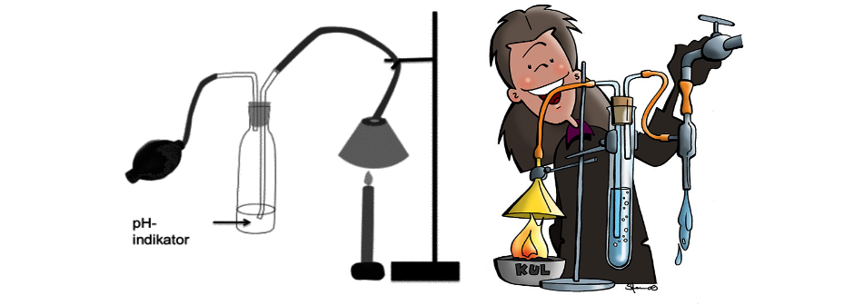

CO2 UDLEDNING FRA KUL
Billedet viser 2 forskellige opstillinger, men forsøget beviser det samme.
CO2 UDLEDNING FRA KUL
Planter, dyr, mennesker og nedbryderes CO2-udledning er en naturlig del af kulstoffets evige kredsløb. Naturen sørger selv for, at dette kredsløb er i balance. Men siden den Industrielle revolution for cirka 250 år siden, har vi mennesker gravet en masse kulstof op af jorden i form af olie, kul og gas.
Olie, kul og gas bliver brændt af, og på den måde sendt ud i atmosfæren i form af drivhusgassen CO2. Denne udledning af CO2 er den væsentligste årsag til, at den naturlige balance i atmosfæres indhold af CO2 har ændret sig, så vi kan forudse store klimaændringer på jorden.
Med følgende forsøg, bliver der bevist, at der dannes CO2 ved arbrænding af kul. Og ud fra det, kan man se at fabrikker som bruger kul til energi, forurener meget med CO2.
Materiale liste: 1 procelænglas, 1 trefod med keramisk net, bunsenbrænder, 1 tragt, 2 gummislanger, 1 stort reagensglas, 1 prop med 2 huller, 1 lige glasrør, 1 bøjet glasrør, 1 stativ, 1 vandluftpumpe, CO2-indikator, kul